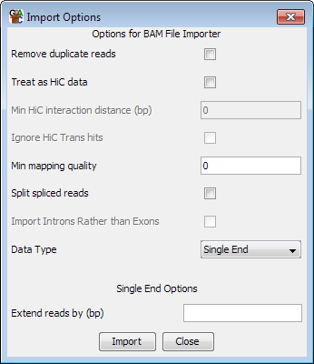

The SAM file format is a flexible text alignment format which is used by a variety of different alignment tools, and BAM is an equivalent binary format which is more compact. It supports single end and paired end reads, and unlike many other formats it is also able to describe reads which map across splice junctions. It is therefore often used by mRNA mapping programs.
Because the SAM/BAM format is well defined you don't need to specify much information to import your data.

In addition to the common options for both single and paired end data, there are a couple of extra option specific to SAM/BAM.
For all read types you can choose to filter the incoming reads based on their mapping quality scores. The quality score ranges from 0 to 255 (with higher scores being better), and if you set a filter value then only mapped reads with a score above this value will be imported. Not all read mappers will include a score value so depending on where the file you are importing came from this option may have no effect.
For Single end reads you can choose to split apart spliced reads. If you have imported your data from a spliced mapped such as Tophat then you can create separate entries for each of the spliced elements of the read so that you can see the appropriate splice junctions in the final output. If you want to see splice junctions then you need to import your data as single end reads, even if it was sequenced as a paired end run. If you imported spliced reads as paired end then you'll just see a read which spans the ends of the pairs, without being able to see any internal splicing patterns.
If you choose to split your reads you have an extra option which is to import the intron positions rather than the exons. If you want to use the data to find novel splice sites then it might make more sense to analyse the intron positions directly.